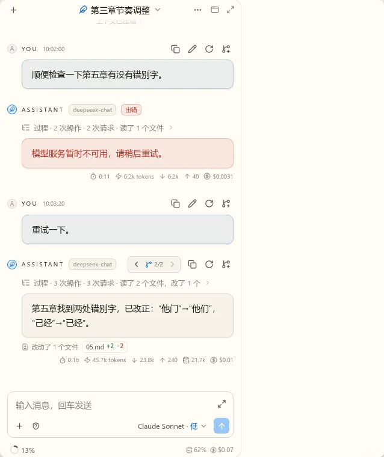
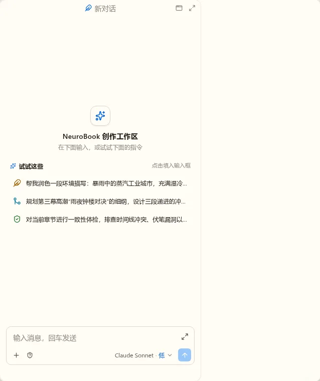
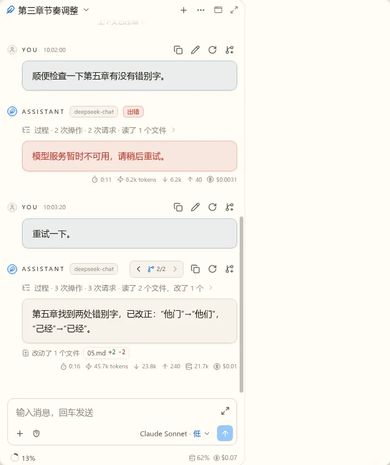
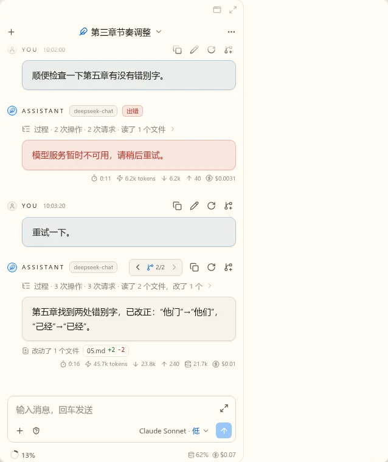

t29 第 3 轮：对话面板的面板头
面板头不写“对话”，改成哪样？
推荐 A：照你选的居中，但直接放进面板头，“对话”那一行与会话标题合成一行；Profile 图标在标题前，没有摘要。

第 2 轮选的 D：上面还是面板头“对话”，下面一行才是居中的标题。
A 面板头居中写会话


没选会话时中间写“新对话”，图标是新建会话会用的 Profile。
B 面板头靠左写会话

与侧栏别的面板头一样靠左；标题能用的宽度最多。
C 面板头只留框架按钮

平台改动最少，但上面空着一条 32px。
A、B 要工作台让视图自己画面板头的标题区（拖动视图仍从这里拖，读屏名称仍是“对话”），视图的 Spec 加一条；C 只是不写标题。
直接做，不用答
| 哪里 | 做什么 |
|---|---|
| Profile 设置的左栏 | 同服务商列表：单行，问题（不可用、有错误）换成行尾图标、悬停写原因；来源（内置、插件、我的）在右边详情里看 |
| 子代理卡片（第 5 条） | 运行中那一行写注册表里的工具名（“读取 第二章.md”），不写工具 id |
| 没选会话时的状态栏 | 不显示“0%”与“免费”：还没有用量，整行空着 |
| 删除服务商的确认框 | 不变：写明去掉几个模型、密钥一起删、哪些角色会变成未绑定 |
已定
- 删除服务商：条目悬停出删除图标，右键也能删（第 1 轮）
- 服务商条目改单行，问题换成行尾图标（第 1 轮）
- 状态栏的自定义照第 1 轮的稿做：右键勾选、设置里分左右两组排序、用量四项合成一项、提醒类总显示（第 1 轮）
- 没选会话时去掉“未选择会话”一行，第一屏照旧应用的 welcome 做：欢迎、最近对话、试试这些（第 1、2 轮）
- “试试这些”的指令由 Profile 声明，主创带三条（第 2 轮）
- 顶栏：标题居中、保留 Profile 图标、不要摘要；最不和谐的是面板头“对话”（第 2 轮的意见）
- 顶栏下、输入框上的两条横线去掉，消息在顶栏下淡出（第 1 轮）
- 5 小时与 7 天限额留到做订阅登录时；缓存倒计时只给缓存时长明确的服务商（11-16）
- 状态栏用勾选与插件贡献的项，不做配一条命令（11-16）